検査はオールA。でも、目の前の人は良くならない。足りない栄養を足すだけでは、もう届かない。 この講座が渡すのは答えではなく、「なぜ」を解く思考の枠組みだ。 自分がまず変わり、現場で使える言葉になる。
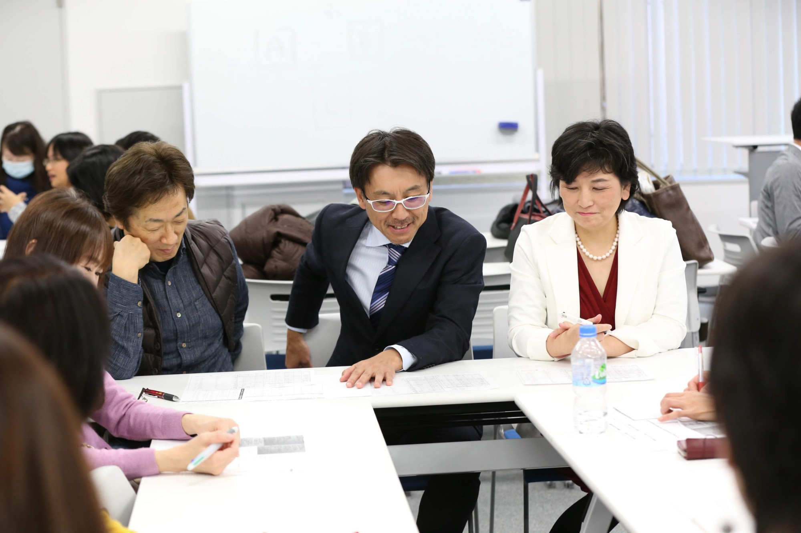

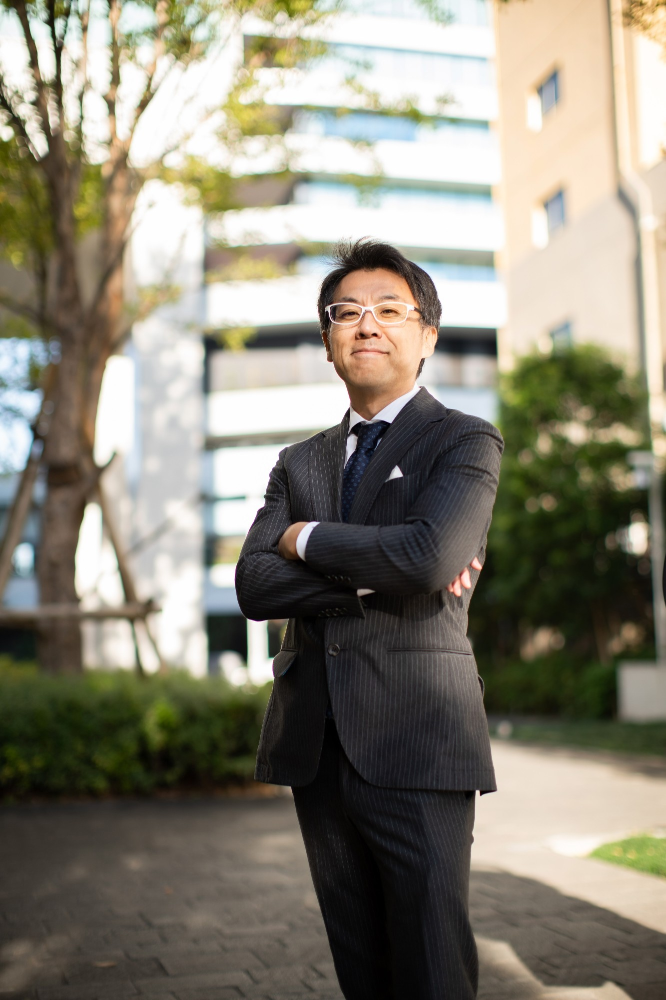

病院でも、カウンセリングでも、同じ光景がある。「異常なし」。血液検査はオールA。でも疲れやすい、眠れない、イライラが止まらない。加齢のせい、性格のせい——そう言い続けて、諦めてきた人がいる。
日本の栄養療法の多くは、いまも「足りない栄養素を補充するだけ」の栄養療法1.0にとどまっている。それは健康な人をさらに調子よくする手法であって、原因に届いていない。
栄養不足は「原因」ではなく「結果」だ。結果だけを埋め続けるから、サプリが一生減らない。
一番大きく変わるのは、スキルの追加より先に、不調のとらえ方そのものだ。「足す」から「根本原因を探して順番に整える」へ。
この講座はもともと治療家のための会から始まった。職種で切るのではなく、「現場でどう使うか」で分かれる。どちらも、学んだ先に「仕事への還元」がある。
保険診療や専門領域の限界を、原因治療で超える。検査の読み方が変わり、院内の共通言語になる。
診断も処方もしない。それでも「なぜ」を伝える説得力がつき、開業・キャリアが広がる。
診断・治療は医師の領域。医師以外は、気づきを広げ、生活習慣の土台を耕し、必要なら専門家へつなぐ。この線引きを守るからこそ、栄養療法は健全に広がる。
※ 本会は医師法・医薬品医療機器等法を遵守。検査データを用いた診断は医師のみが行える医療行為です。医師以外の方は、法令に抵触しない範囲で知識を活かします。
根本原因が体にダメージを与え、その結果として栄養素が消耗する。だから補う。ならば、原因が消えればサプリは要らなくなっていく。
放置された根本原因が、体に慢性的な負荷をかけ続ける。
ダメージを補償するために栄養素が消費される。サプリはその穴埋め。
腸が修復されれば理論上アレルギーも出ない。なんでも食べられる体へ。

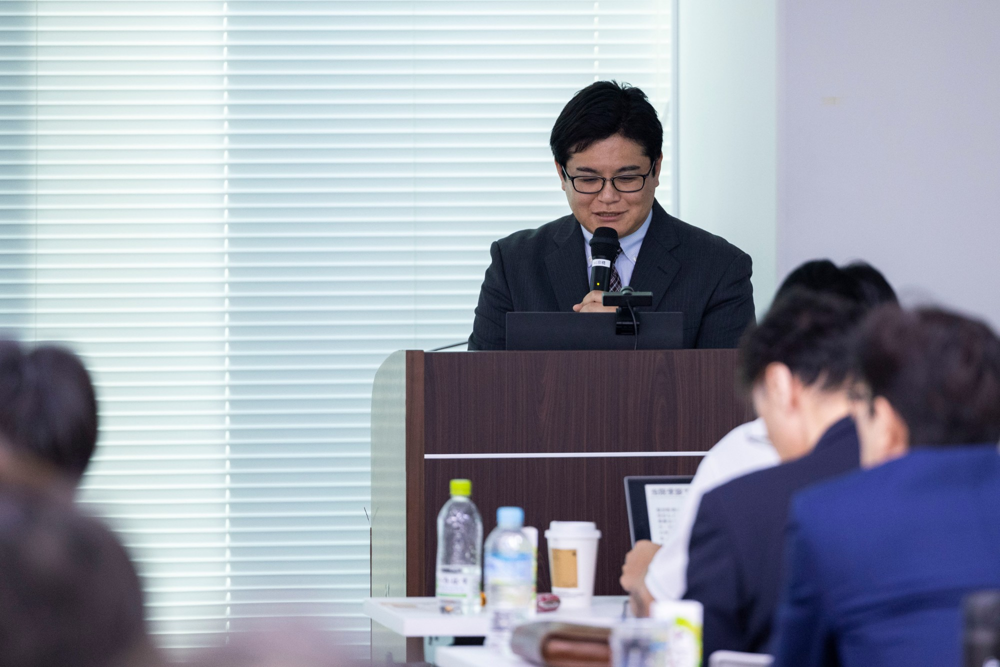
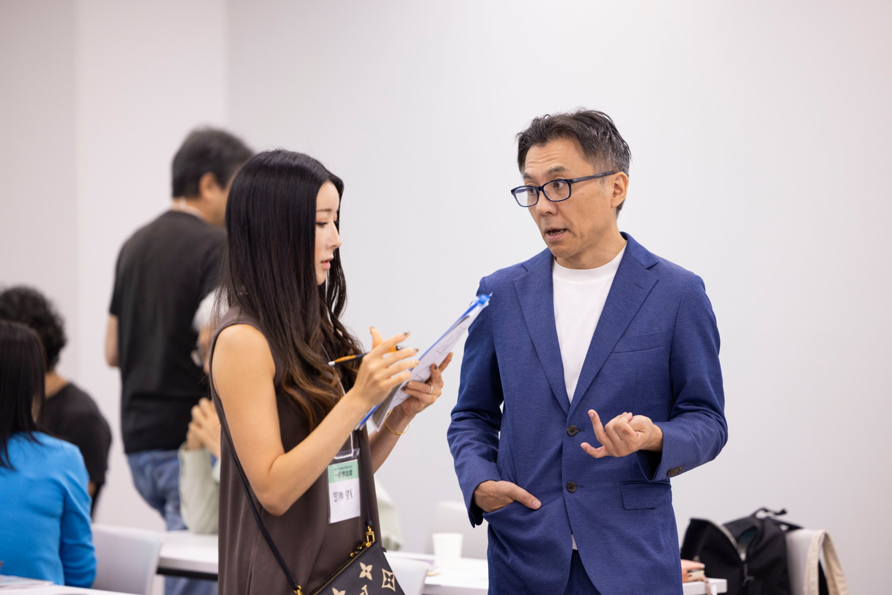

全員がそうなると約束はしない。だがそこを目指すからこそ、現場はうまくいく。目指さなければ、原因は残ったまま、サプリだけが増える。
副腎（HPA軸）→ 腸 → 肝（解毒）→ 脳。この順序こそ、他のどの栄養療法にもない核心だ。なぜ良くならないのか。多くの場合、答えは「順番を飛ばしているから」。
副腎が整わないまま何を足しても体は動かない。血糖の安定がすべての前提になる。
腸が荒れていれば、何を食べても栄養にならない。解毒は腸の後だ。
順番を飛ばすと悪化する。IgAと排泄経路を整えてから動く。
基準値内でも機能低下は起きる。ALT・ALP・LDH・フェリチンを機能的マーカーとして読み替える。
5つのボトルネック、7大遺伝子パネル、排泄量（＝解毒力）の指標で個体差を測る。
血糖の安定（4F・補食）、運動、睡眠。現場で最も動かせて、最も喜ばれる領域。
低血糖・副腎疲労の体感が、一番の説得力になる。伝える言葉は、体感のあとに生まれる。
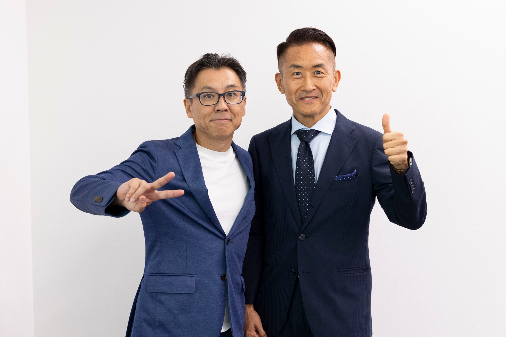
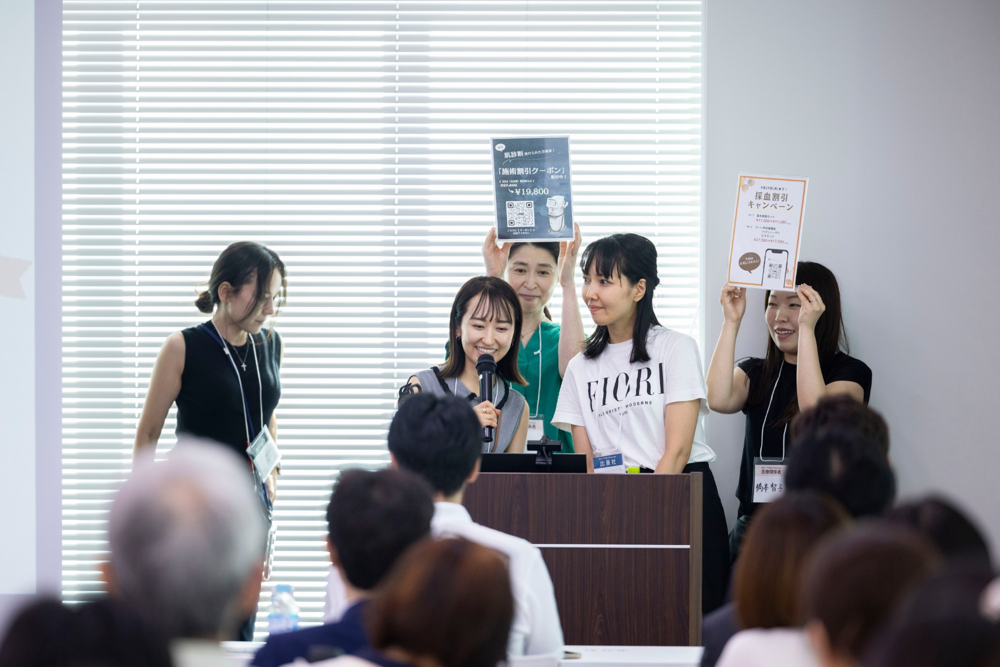


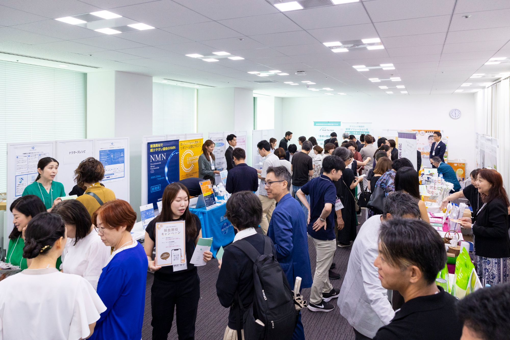

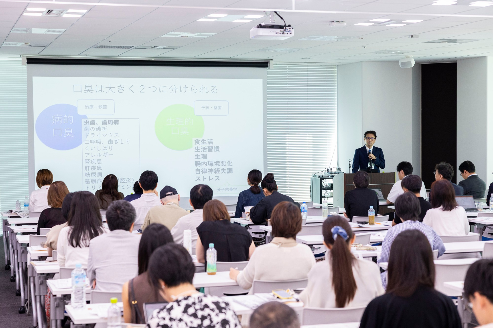
| Before ｜ 栄養療法1.0 | After ｜ 根本原因型 2.0 |
|---|---|
| 足りない栄養をサプリで足す | なぜ足りなくなるのかを問い、順番に整える |
| 基準値内＝健康、で話が終わる | 基準値内の機能低下を読み、「なぜ」を説明できる |
| サプリが一生減らない | ゴールは卒業。依存を減らす方向へ |
| 断片情報を寄せ集め、言葉に説得力がない | 点と点がつながり、順序立てて伝えられる |
| 自分の不調を性格やストレスのせいにする | 体のSOSと理解し、自分がまず回復する |
| 患者・クライアントへの引き出しが足りない | 現場で使える地図が増え、仕事に還元できる |
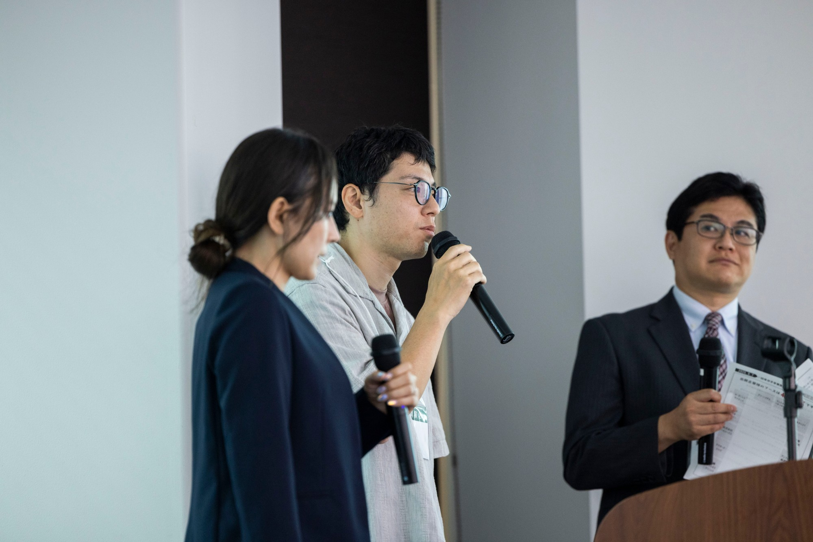
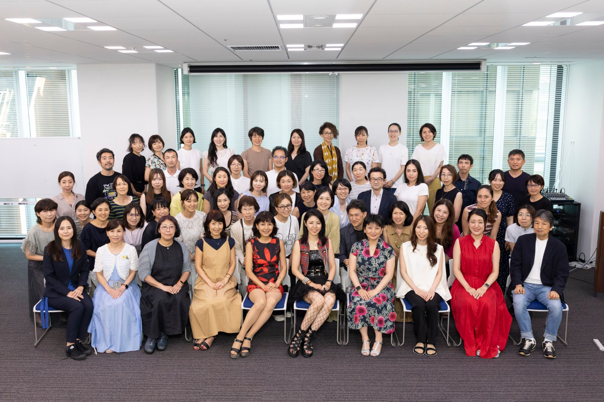

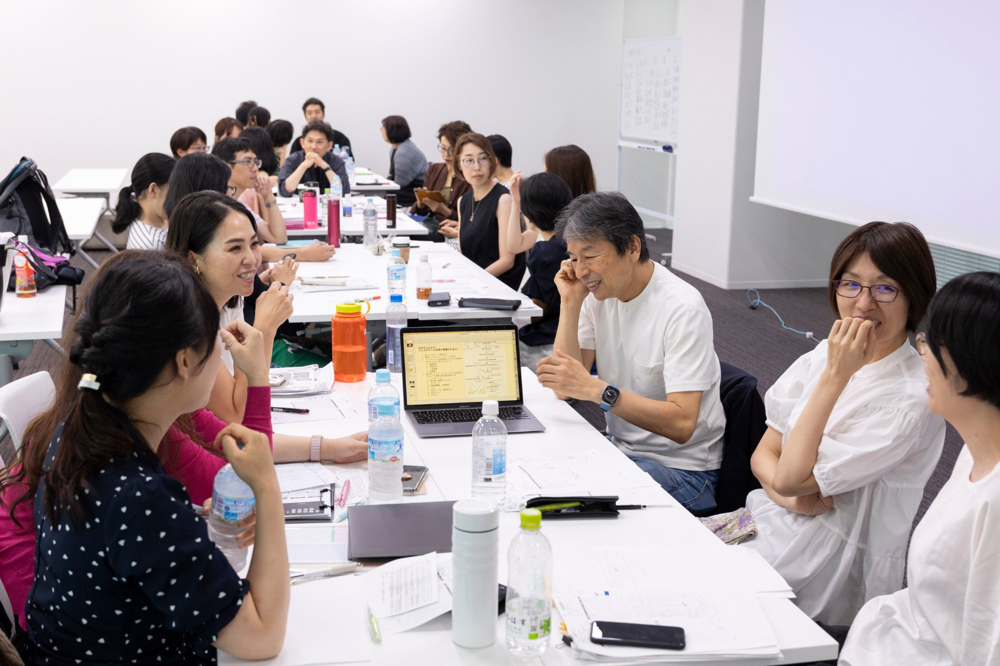

自分の体で「順番」を体感する。それが、外来で一番説得力のある教材になる。
サプリを増やす診療から、原因に介入する診療へ。患者が自分から動き出す。
体感が最初の実績になる。伝えたい気持ちは、そのあと自然に芽生える。
「なぜ」を伝えられるようになり、改善に喜ぶ人が増える。開業・単価・満足度に直結する。

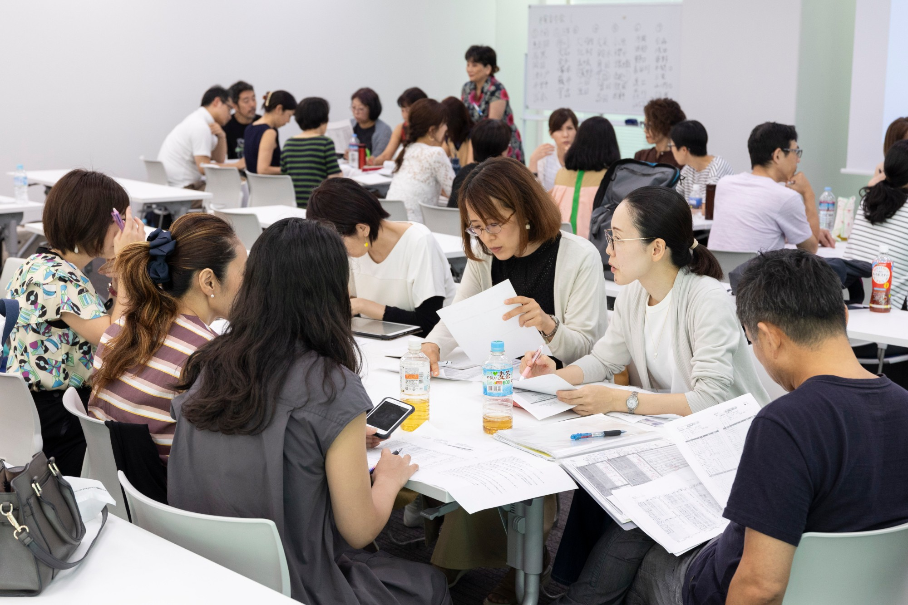

栄養療法AI：血液検査・GI-MAPなどの結果を分子栄養学的に解析し、全講義内容を統合したナレッジベースを搭載。20年以上の臨床知見を、自分の検査を解析しながら実践的に学べる。
遺伝子検査キット GENE PROFILE（定価55,000円・先着50名）：MTHFR・COMT・DAO・APOE4など。読み方と活用法を講義で解説。
※ 栄養療法AIは学習支援ツールであり、医療行為を提供するものではありません。診断・治療方針の決定は必ず医師の判断に基づいて行ってください。


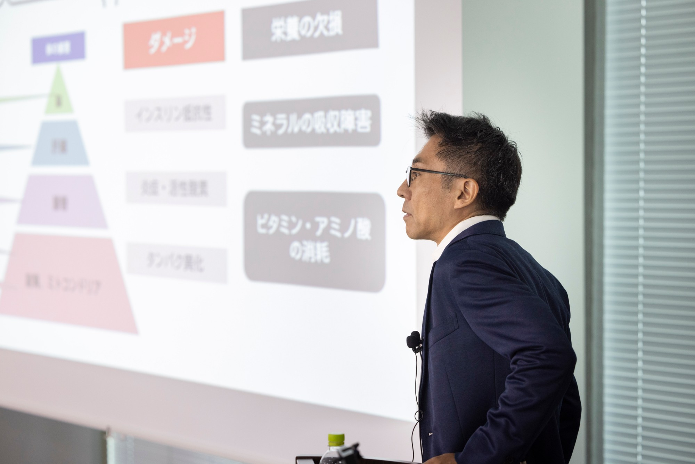

※ 会場回は東京・大阪・福岡。ZOOM回は自宅等から参加可。試験はWEB受験。
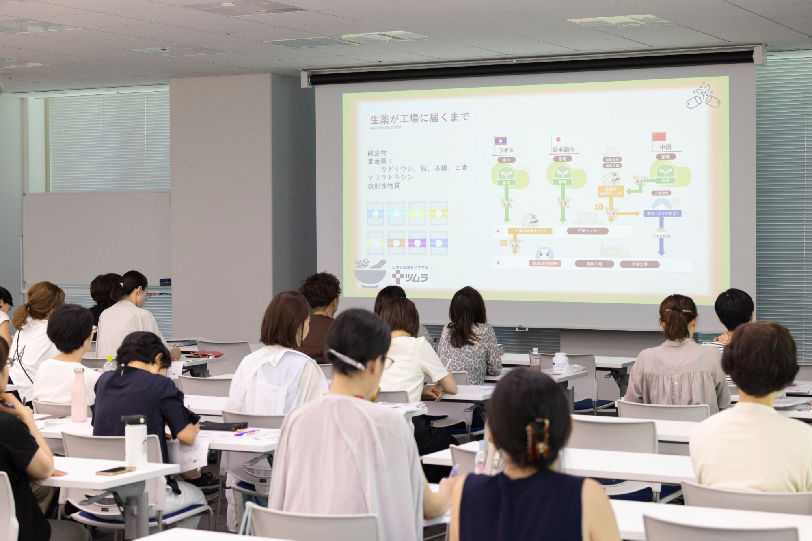
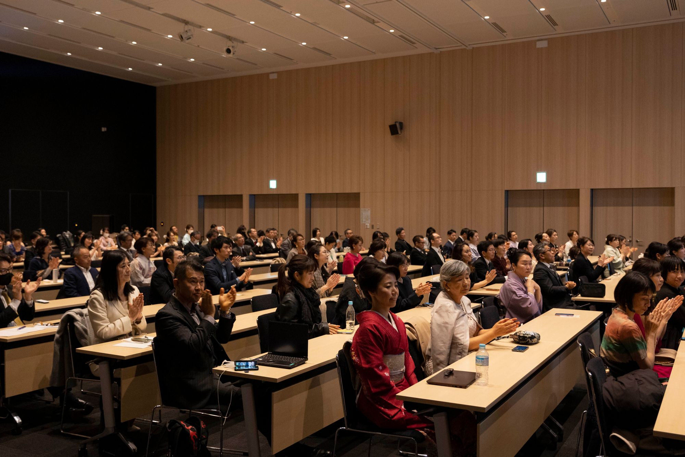


カウンセラー・治療家・発信者・コメディカル・志望者はこちら。
お申込みは公式サイトから。銀行振込にも対応。
医療チームで使う人たち
「私が分子栄養学実践講座を知ってから、クリニックにしっかりとした治療方針の柱ができました。宮澤先生の講義は極端に偏らず、公正・客観的で、できる限りエビデンスに基づいている」— 小西 康弘 医師（小西統合医療内科 院長）
「薬物療法だけでは改善できない症状に、分子栄養学でアプローチできるようになった。治療者にとって革命的な変化だ」— 精神科医
「副腎疲労でアドレナリンで生きていると言われ愕然とした。皮膚科に栄養を取り入れ、難治例が補食やタンパク質で良くなる方が続出している」— 皮膚科医
「専門外だから関係ないと思っていた。だが多くの病気は障害臓器が違うだけで、根本原因は同じだと見えてきた」— 循環器医
伝える側で使う人たち
「分子栄養学カウンセラーとして開業しました。これに尽きます」— カウンセラー
「淡々と大切なことに集中できる"菩薩モード"に。クライアントにも栄養サポートができ、改善に喜ぶ人が増え、今以上に仕事が楽しい」— 総合治療家・トレーナー
「心理だけでなく栄養的な背景を考察できるようになった。クライアントは低血糖の人が多いと気づき、補食を紹介すると睡眠が整う人がほとんど」— 心理セラピスト
「過剰を削る指導から、不足と消化吸収を見る指導へ変わった。低血糖のメカニズムから、体は全てつながっていると実感した」— 管理栄養士
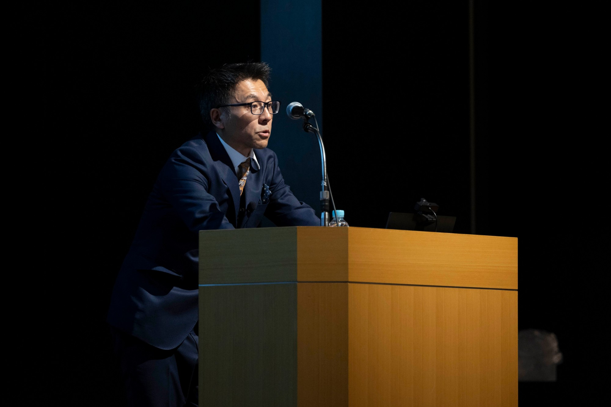


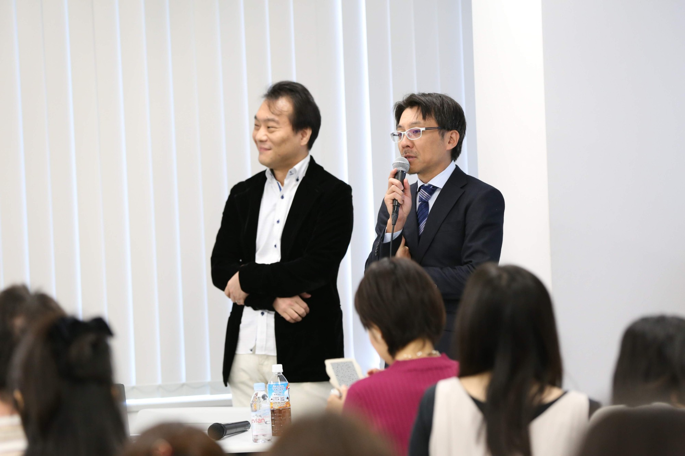


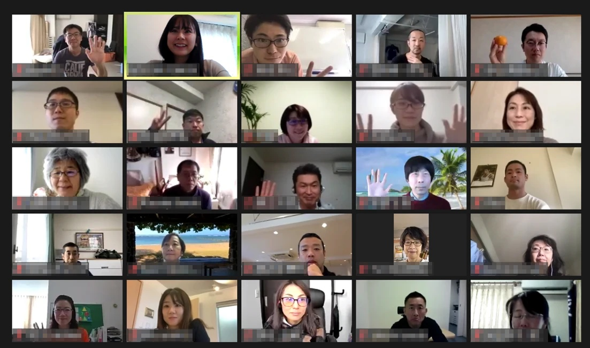
講義・グループワーク・会場の様子（累計3,542名が学んだ現場）
臨床分子栄養医学研究会 代表／京橋ウェルネスクリニック院長。2001年から栄養療法を開始し、25,000人以上に診療・データ解析・監修。著書『あなたのサプリが効かない理由』。
こいけ診療所院長。漢方専門医の経験を活かし、顔貌や姿勢から栄養状態を見抜く。研究会指導医。著書『気分の9割は血糖値』。
吉田歯科診療室銀座院長。歯科医療に栄養医学を取り入れ、YouTubeは400万回再生。栄養医学啓蒙の第一人者。
分子栄養学カウンセラー「ビタミンアカデミー」、松崎茂利（ディアらぼ）、田中裕規（断食メガネ）、井上みどりなど、医師でなくてもフィールドを築いた伝道者が並ぶ。
申込 → 根本原因を探る検査 → 2026年10月11日開講（全8回）→ 2027年1月 修了認定試験。会場（東京・大阪・福岡）とZOOMのハイブリッド。
原因不明の不調を「自分のせい」にしていた人が、
「根本原因は説明でき、順番に整えられる」と知る。
自分が回復し、伝える側に回る。
医師なら診療の地図として。伝える人なら、人生が動き始めるきっかけとして。立場は違っても、渡すものは同じ——「なぜ」を解く枠組みだ。
諦めなくていい不調を、諦めさせない。